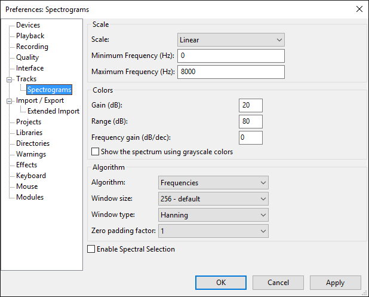

Spectrograms Preferences
From Audacity Development Manual
See the Spectrogram View page for detailed descriptions and illustrations of the effects of various Spectrograms Preferences settings.
Spectrograms preferences does not affect settings in the Frequency Analysis window accessed by .
- Accessed by: (on a Mac
- 
- Click on any of the other Preferences sections in the above image to go directly to that Preferences page.
Scale
- Scale in Waveform views:
- Linear (default scaling): The linear scale left goes linearly from +1 at the top (the maximum possible loudness without distortion when the signal is positive) to -1 at the bottom (the maximum when it is negative).
- Logarithmic: In this scale the vertical scale is in dB. This is a logarithmic method of displaying the amplitude. See this Wikipedia page.
- Scale in Spectrogram views:
- Linear The linear vertical scale goes linearly from 0 kHz to 8 kHz frequency by default.
- Logarithmic: This view is the same as the Spectrogram view except that the vertical scale is logarithmic. See Spectrogran View for a contrasting example of linear versus logarithmic spectrogram view.
- Mel: The name Mel comes from the word melody to indicate that the scale is based on pitch comparisons. See this Wikipedia page.
- Bark: This is a psychoacoustical based on subjective measurements of loudness. It is related to, but somewhat less popular than, the Mel scale. See this Wikipedia page.
- ERB: The Equivalent Rectangular Bandwidth scale or ERB is a measure used in psychoacoustics, which gives an approximation to the bandwidths of the filters in human hearing. It is implemented as a function ERBS(f) which returns the number of equivalent rectangular bandwidths below the given frequency "f". See this Wikipedia page.
- Period: is the previously undocumented scale used by Pitch (EAC) view. It is for making the same displays of Pitch possible as in earlier versions of Audacity.
- Minimum Frequency: This value corresponds to the bottom of the vertical scale in the spectrogram. Frequencies below this value will not be visible. The default value of "0" here will be treated as "1" when using "Spectrogram Logarithmic" view mode because a logarithmic scale cannot start at zero.
- Maximum Frequency: This value corresponds to the top of the vertical scale. The value can be set to 100 Hz or any higher value. Irrespective of the entered value, the top of the scale will never exceed half the current sample rate of the track (for example, 22050 Hz if the track rate is 44100 Hz) because any given sample rate can only carry frequencies up to half that rate. A good use of this setting is in speech recognition or pitch extraction, where you can hide the visually unimportant highest frequencies and focus on the lower frequencies.
Colors
- Gain (dB): This enables you to increase / decrease the brightness of the display. For small signals where the display is mostly "blue" (dark) you can increase this value to see brighter colors and give more detail. If the display has too much "white", decrease this value. The default is 20dB and corresponds to a -20 dB signal at a particular frequency being displayed as "white". The option has no effect on the Pitch (EAC) view.
- Range (dB): Affects the range of signal sizes that will be displayed as colors. The default is 80 dB and means that you will not see anything for signals 80 dB below the value set for "Gain". This option has no effect on the Pitch (EAC) view.
- Frequency Gain (dB/dec): A positive value here gives some extra gain to higher frequencies (above 1000 Hz), as they tend to be smaller and so cannot be seen as well. You get less gain at lower frequencies as well. The default is 0 dB.
- Show the spectrum using grayscale colors: Shows gray shades in all spectrogram views instead of full color.
Algorithm
- Algorithm:
- Frequencies (default): Audio frequency determines the pitch of a sound. Measured in Hz, higher frequencies have higher pitch. See this Wikipedia article.
- Reassignment: The method of reassignment sharpens blurry time-frequency data by relocating the data according to local estimates of instantaneous frequency and group delay. This mapping to reassigned time-frequency coordinates is very precise for signals that are separable in time and frequency with respect to the analysis window.
- Pitch (EAC): Highlights the contour of the fundamental frequency (musical pitch) of the audio, using the Enhanced Autocorrelation (EAC) algorithm. The EAC Algorithm was developed to produce a mathematical representation of the changes of pitch in a piece of audio. The aim was to allow automated comparison of sound files so that two versions of the same tune could be recognized as being similar, even if played in different keys, or on different instruments.
- Window Size: The dropdown menu lets you choose the size of the Fast Fourier Transform (FFT) window which affects how much vertical (frequency) detail you see. Larger FFT window sizes give more low frequency resolution and less temporal resolution, and are slower.
- Window type: Determines precisely how the spectrogram is computed. 'Rectangular' is slightly faster than other methods, but introduces some artifacts. All methods give broadly similar results.
- Zero padding factor: Larger values give finer interpolation of the colors along the vertical axis, at the expense of more computation time. Does not affect the time vs. frequency resolution tradeoff. Has no effect in Pitch view.
Enable Spectral Selection
Check this box "on" if you want to enable spectral selections. These are used to make selections that include a frequency range as well as a time range on tracks in one of the Spectrogram views. Spectral selection is used with special spectral edit effects to make changes to the frequency content of the selected audio. Among other purposes spectral selection and editing can be used for cleaning up unwanted sound, enhancing certain resonances, changing the quality of a voice or removing mouth sounds from voice work.